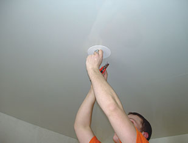

+7 8722 93-10-10
+7 8722 93-10-10
Натяжные потолки уже пришли в Ваш дом? Советы по уходу за потолочной конструкцией помогут Вам надолго сохранить блески и красоту натяжного потолка

Срок эксплуатации натяжного потолка практически не ограничен. При появлении на полотне потолка загрязнения, достаточно протереть загрязнение влажной мягкой салфеткой, лучше всего белой фланелью. Если результат не достигнут и загрязнение остается, то можно использовать обычные жидкие моющие средства, не содержащие абразивный материал. Небольшое количество мыльного концентрата развести в тёплой воде, смоченной в растворе фланелью лёгкими движениями удалить загрязнения.
Затем влажной салфеткой удалить остатки мыльного раствора и окончательно протереть поверхность натяжного потолка сухой фланелью. Если на потолочном покрытии появились пятна ржавчины, то необходимо удалять их сразу, не дожидаясь их высыхания.
Можно воспользоваться специальными полиролями по уходу за натяжными потолками. Но как бы вы ни ухаживали за вашим потолком, - правило одно, - осторожность. Протирать полотно потолка нужно как можно бережнее, исключить любые воздействия, которые могут привести к соприкосновению пленки натяжного потолка с базовым потолком.
Если глянцевый потолок перестаёт блестеть, его следует протереть сухой салфеткой либо протереть потолок 10%-ным раствором нашатырного спирта или слабым мыльным раствором, затем протереть поверхность потолка насухо. Не допускается использование средств, содержащих керосин и растворители и ацетон.
В случае протечки сверху нужно отключить все потолочные светильники и вызвать бригаду монтажников. Не рекомендуем проводить процедуру устранения протечки самостоятельно.
Чтобы не допустить увеличения пластичности полотна, провисания и расплавления участков потолочного полотна вокруг встроенных светильников, рекомендуется использовать лампы накаливания в страиваемых светильниках мощностью не более 60 Вт, а галогенных ламп - не более 35 Вт. Следует обращать внимание на предельную мощность лампы, указанную на светильнике. В подвесном светильнике можно использовать лампы любой мощности, но не выше рекомендуемой изготовителем светильника.
Не рекомендуется самостоятельно врезать в полотно потолка потолочные конструкции, индикаторы дыма, дополнительные светильники. В случае механического повреждения потолка (пореза, прокола) необходимо края разрыва полотна скрепить скотчем и вызвать специалиста. Белить и красить полотно потолка нельзя.
Наш адрес:
г. Махачкала, проспект Гамидова, 47
Телефон: +7 989 447 47 47
Электронная почта: era.k@mail.ru

Заполните форму и мы перезвоним вам